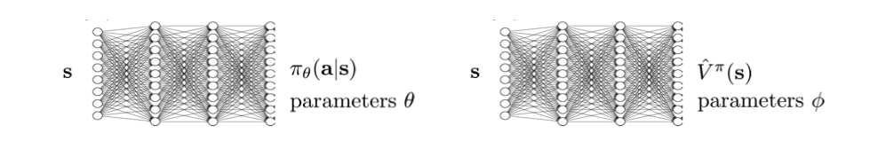

In this page, I analyze value estimation as a way to reduce the high variance of policy gradient methods. I first study how value functions, Q-functions, and advantage functions can be used inside actor-critic algorithms, then derive value-based reinforcement learning and Q-learning as the limiting case where the critic directly determines the policy.
REINFORCE
This is the REINFORCE algorithm from Chapter 2, with return-to-go and a value baseline applied to reduce the variance of the policy gradient estimate. The last term in the second line is an estimate of the advantage $A^\pi(s_t,a_t)=Q^\pi(s_t,a_t)-V^\pi(s_t)$. Here, the sampled return-to-go $\sum_{t'=t}^{T} r(s_{t'},a_{t'})$ is used as an unbiased estimate of $Q^\pi(s_t,a_t)$, so subtracting the value baseline gives an unbiased estimate of $A^\pi(s_t,a_t)$.
However, this estimate still comes from a single sampled trajectory. It is unbiased, but it can have high variance because the future rewards depend heavily on the particular rollout sampled from the current policy.
Policy Evaluation
Policy evaluation is the problem of estimating how much return the current policy will collect. We first define the state-action value, the state value, and the advantage:
If we know the value function, then the action-value after taking $a_t$ in $s_t$ can be written as the immediate reward plus the value of the next state: $Q^\pi(s_t,a_t)=r(s_t,a_t)+\mathbb{E}_{s_{t+1}\sim p(s_{t+1}\mid s_t,a_t)}[V^\pi(s_{t+1})]$. This means that a fitted $V^\pi$ can be reused to estimate $Q^\pi$. The advantage is also determined by $Q^\pi$ and $V^\pi$. It measures whether the sampled action was better or worse than the policy's typical action at the same state: $A^\pi(s_t,a_t)=Q^\pi(s_t,a_t)-V^\pi(s_t)$. Therefore, rather than fitting separate models for $Q^\pi$, $V^\pi$, and $A^\pi$, we can focus on fitting $V^\pi$ and derive the other estimates from it.
Monte Carlo policy evaluation fits this value function from sampled rollouts. For each visited state $s_t^{(i)}$, the sampled return-to-go $y_t^{(i)}=\sum_{t'=t}^{H}r(s_{t'}^{(i)},a_{t'}^{(i)})$ gives a supervised target for $V^\pi(s_t^{(i)})$. With function approximation, we represent the value function as $\hat{V}_\phi^\pi(s)$ and train it by regression, minimizing $\mathcal{L}(\phi)=\frac{1}{2}\sum_i\sum_t\|\hat{V}_\phi^\pi(s_t^{(i)})-y_t^{(i)}\|^2$. Because the same function is fit across many sampled states and trajectories, it can average over noisy return-to-go targets instead of using a single rollout estimate directly.
The ideal target for $V^\pi(s_t^{(i)})$ is the expected future return from that state, $y_t^{(i)}=\sum_{t'=t}^{H}\mathbb{E}_{\pi_\theta}[r(s_{t'}^{(i)},a_{t'}^{(i)})\mid s_t^{(i)}]$. This is the best regression target because it averages over all possible future continuations under the policy, rather than depending on the noise of one particular trajectory. Monte Carlo evaluation approximates this target by using the rewards from one sampled rollout. A bootstrapped estimate instead uses the recursive structure of the value function: after taking the first sampled action, the remaining future return should be the value of the next state. Therefore the ideal target can be approximated as $y_t^{(i)}\approx r(s_t^{(i)},a_t^{(i)})+V^\pi(s_{t+1}^{(i)})$.
Since the true $V^\pi$ is unknown, we plug in the previously fitted value function and use $y_t^{(i)}=r(s_t^{(i)},a_t^{(i)})+\hat{V}_\phi^\pi(s_{t+1}^{(i)})$ as the supervised target. This is called bootstrapping because the value model trains itself using a target that partly comes from its own earlier prediction. Compared with the full Monte Carlo return, this usually has lower variance because it does not wait for all future sampled rewards, but it can introduce bias when $\hat{V}_\phi^\pi(s_{t+1})$ is inaccurate.
Actor-Critic
So far, we have parameterized both the policy and the value function. An actor-critic method uses these two parameterized models together: the actor is the policy $\pi_\theta(a\mid s)$, and the critic is the value function $\hat{V}_\phi^\pi(s)$.

A basic actor-critic algorithm is usually described in a batch form first. Here, a batch means a set of transitions collected by running the current policy before performing the parameter updates. The policy is held fixed while collecting these samples; then the critic is fit to the collected targets, and the actor is updated using the advantages computed from that critic.
The important change from plain REINFORCE is that the return estimate is now produced by the critic. The target $y_i=r(s_i,a_i)+\gamma \hat{V}_\phi^\pi(s_i')$ is bootstrapped from the next-state value, and the advantage $\hat{A}^\pi(s_i,a_i)=r(s_i,a_i)+\gamma\hat{V}_\phi^\pi(s_i')-\hat{V}_\phi^\pi(s_i)$ says whether the sampled action did better or worse than the critic's prediction for $s_i$.
The online actor-critic algorithm makes the same updates without waiting for a whole batch or trajectory. Suppose we only observe one transition $(s_i,a_i,s_i')$. We compute the same bootstrapped target $y_i=r(s_i,a_i)+\gamma\hat{V}_\phi^\pi(s_i')$, update the critic with the single-sample loss $\mathcal{L}_i(\phi)=\|\hat{V}_\phi^\pi(s_i)-y_i\|^2$, then use the resulting one-transition advantage to update the actor: $\nabla_\theta J(\theta)\approx\nabla_\theta\log\pi_\theta(a_i\mid s_i)\hat{A}^\pi(s_i,a_i)$.
Off-policy Actor-Critic
In the actor-critic update above, each transition is used immediately after it is generated. This is simple, but inefficient: once the update is done, the transition is discarded. Off-policy actor-critic tries to reuse past experience by storing transitions $(s_i,a_i,r_i,s_i')$ in a replay buffer $\mathcal{R}$ and training from batches sampled from that buffer. The word off-policy means that the data in the update does not necessarily come from the latest policy $\pi_\theta$; it may have been collected by older versions of the policy.
A tempting first attempt is to take the online actor-critic algorithm and simply add a replay buffer:
This algorithm is broken. The replay buffer contains data from older policies. The sampled action $a_i$ was generated by some behavior policy $\bar{\pi}$, not necessarily by the latest policy $\pi_\theta$. Therefore $\nabla_\theta\log\pi_\theta(a_i\mid s_i)\hat{A}^\pi(s_i,a_i)$ is no longer a valid policy-gradient estimator for the latest policy: it asks the current policy to reinforce actions that the current policy might not have taken.
There is also a state-distribution mismatch. The states $s_i$ in the replay buffer may come from older policies rather than the latest state distribution $p_\theta(s)$. Off-policy actor-critic methods usually accept this mismatch and treat replay states as a useful training distribution. The more immediate problem is the action mismatch: the actor update should not treat the old replay-buffer action as if it were sampled from the latest policy.
The value target is also wrong if the critic only estimates $V^\pi(s)$. For the latest policy, we want $V^\pi(s_i)=\mathbb{E}_{a\sim\pi_\theta(a\mid s_i)}[r(s_i,a)+\gamma V^\pi(s_i')]$, but the replay-buffer action satisfies $a_i\sim\bar{\pi}(a\mid s_i)$. Using $r_i+\gamma\hat{V}_\phi^\pi(s_i')$ as if $a_i$ had been drawn from $\pi_\theta$ estimates the value under the behavior policy in the buffer, not the value under the current policy.
The key fix is to estimate an action-value function instead of only a state-value function. A Q-function keeps the action as an input, so the critic can learn from the replay-buffer transition that was actually observed: $\hat{Q}_\phi^\pi(s_i,a_i)\leftarrow r_i+\gamma\mathbb{E}_{a'\sim\pi_\theta(a'\mid s_i')}[\hat{Q}_\phi^\pi(s_i',a')]$. The old action $a_i$ is used only as the action whose Q-value is being trained. For the next action $a'$, we use the latest policy $\pi_\theta$, which makes the target correspond to the current policy after the observed transition.
With this critic, the actor no longer needs to directly update the policy using the old replay-buffer action. Instead, for each replay-buffer state $s_i$, we ask what action the current policy would take now and improve that action according to the learned Q-function: $\nabla_\theta J(\theta)\approx \frac{1}{B}\sum_i \mathbb{E}_{a\sim\pi_\theta(a\mid s_i)} [\nabla_\theta\log\pi_\theta(a\mid s_i)\hat{Q}_\phi^\pi(s_i,a)]$. This is the policy-gradient form of $\nabla_\theta\mathbb{E}_{a\sim\pi_\theta(a\mid s_i)}[\hat{Q}_\phi^\pi(s_i,a)]$. The action inside this expectation is sampled from the latest policy, not copied from the replay buffer.
Because the gradient we want is $\nabla_\theta\mathbb{E}_{a\sim\pi_\theta(a\mid s)}[\hat{Q}_\phi^\pi(s,a)]$, it is useful to differentiate through $\hat{Q}_\phi^\pi(s,a)$ itself. The obstacle is that $a$ is sampled from $\pi_\theta$, so the dependence of $\hat{Q}_\phi^\pi(s,a)$ on $\theta$ is hidden behind the sampling step. The reparameterization trick exposes this dependence by writing, for a Gaussian policy, $a=\mu_\theta(s)+\sigma_\theta(s)\epsilon$ with $\epsilon\sim\mathcal{N}(0,1)$. Now $a$ is a differentiable function of $\theta$, so autograd can propagate the gradient of $\hat{Q}_\phi^\pi(s,a)$ through the action back into the policy parameters. This is the trick used by practical off-policy actor-critic methods such as Soft Actor-Critic.
Q-learning
Value-based reinforcement learning removes the explicit actor. Instead of learning a policy $\pi_\theta(a\mid s)$ and a critic separately, we learn an action-value function. If the optimal Q-function $Q^*(s,a)$ were known, the policy would be recovered greedily: $\pi^*(s)=\arg\max_a Q^*(s,a)$. So the policy does not need its own parameters; it is defined by the Q-function itself.
The learning target should therefore assume that, after the current transition, the agent will act greedily with respect to its current Q-function. This changes the next-state part of the target from "evaluate the current actor" to "take the best action under the Q-function": $y_i=r_i+\gamma\max_{a'}Q_\theta(s_i',a')$. This greedy backup is the Q-learning target. It is the critic-only version of the off-policy actor-critic target $r_i+\gamma\mathbb{E}_{a'\sim\pi_\theta(a'\mid s_i')}[\hat{Q}_\phi^\pi(s_i',a')]$, with the actor replaced by a maximization over actions.
In the tabular case, Q-learning can update a single table entry for each transition. With deep learning, $Q_\theta(s,a)$ is a neural network, so changing one parameter changes many state-action values at once. The update is therefore written as a regression problem: construct bootstrapped targets from replay-buffer transitions, then fit the Q-network to those targets. This is fitted value iteration.
The target says: predict the return of taking the replay-buffer action $a_i$ in $s_i$, then behaving greedily according to the current Q-function from the next state onward. The max is the policy improvement step; the regression loss is the policy evaluation step with function approximation. In this sense, Q-learning is an off-policy critic algorithm where the critic itself defines the policy through $\arg\max_a Q_\theta(s,a)$.
The fitted version describes the batch structure. We repeatedly build targets for a batch of transitions and fit $Q_\theta$ to those targets:
Online Q-learning is the incremental version of the same idea. Instead of waiting to refit the Q-function on a fixed dataset, the agent takes one environment step, stores the transition in the replay buffer, samples a mini-batch, forms the same target $y_i=r_i+\gamma\max_{a'}Q_\theta(s_i',a')$, and takes a gradient step on the squared error. This is the bridge from classical Q-learning to deep Q-learning: the tabular update becomes a supervised regression update on a neural Q-function.